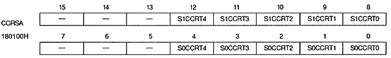
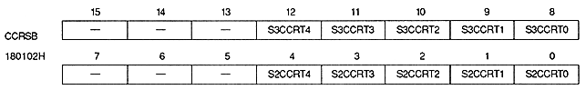
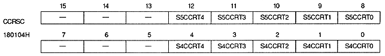
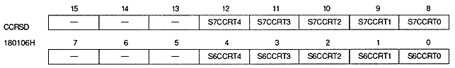
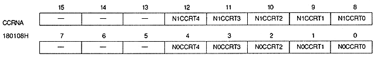
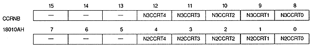
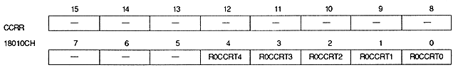
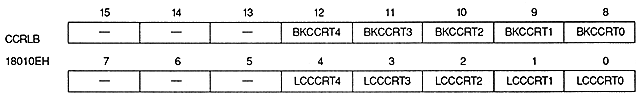

Return to previous page ｜ Return to menu ｜ Go to next page
Color calculation ratio (Sprite 0, 1)

Color calculation ratio (Sprite 2, 3)

Color calculation ratio (Sprite 4, 5)

Color calculation ratio (Sprite 6, 7)

Color calculation ratio (NBG0, NBG1)

Color calculation ratio (NBG2, NBG3)

Color calculation ratio (RBG0)

Color calculation ratio (Line color screen, Back screen)

Return to previous page ｜ Return to menu ｜ Go to next page